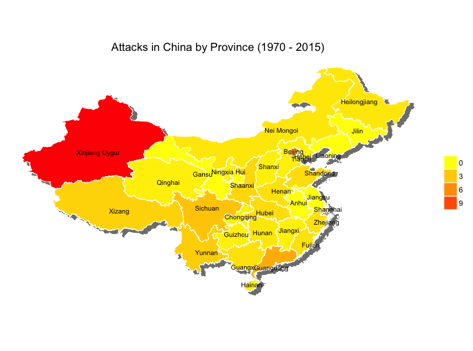
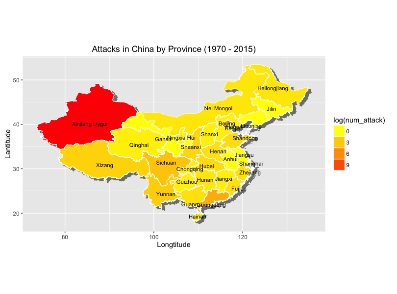

Terrorist attack is a national problem worldwide. Fortunately according to this dataset, from 1970-2015 (actully 1989-2015), there are only 242 terrorist attacks in China, in which 2917 killed or wounded. Also, it's astounding that 128 out of the all 242 attacks were happend in Xinjing (Sinkiang, Uygur).
Within this report, I showed the map in R using ggmap and ggplot2 (geom_polygon).
Read Data
library(ggplot2)
library(data.table)
library(dplyr)
library(ggmap)
library(maptools)
library(rgeos)
library(gpclib)
library(foreign)
library(sp)
library(ggplot2)
data <- fread('globalterrorismdb_0616dist.csv', showProgress = FALSE)
data_country <- data %>%
group_by(country_txt) %>%
summarise(num_attack = sum(n())) %>%
arrange(desc(num_attack))
China <- data %>% filter(country_txt == 'China') %>%
select(eventid:location, nkill, nwound) %>%
mutate(nkill = ifelse(is.na(nkill), 0, nkill)) %>%
mutate(nwound = ifelse(is.na(nwound), 0, nwound)) %>%
mutate(Injury_Death = nkill+nwound)
Note for the attacks in China, there is one without latitude and longitude.
Attacks in China by Longitude/Latitude (on Google maps)
# boundaries of China, from https://en.wikipedia.org/wiki/List_of_extreme_points_of_China
lat <- c(20, 54)
lon <- c(73, 135)
map_China <- get_map(location = c(lon=mean(lon), lat=mean(lat)), zoom=4, source='google', color='color')
p1 <- ggmap(map_China) +
geom_point(data=China, aes(y=latitude, x=longitude, size=Injury_Death), col='red', alpha=0.3,
position = 'jitter') +
labs(title = 'Terrorist Attacks in China')
p1

Attacks in China by year
China_attack_year <- China %>%
group_by(iyear) %>%
summarize(num_attack = n())
p2 <- ggplot(China_attack_year, aes(x=iyear, y=num_attack)) +
geom_line(size=1, color='orange') +
labs(title = 'Terrosit Attacks in China by Year (1970-2015)', x='Year', y='Number of Attacks') +
theme_classic()
p2

Although for the whole dataset, the earliest record of terrorist attacks is in 1975, for each the earlist is in 1989. So in other words, the plot shows the attacks in China from 1989-2015.
Attacks in China by provinces
I downloaded the administrative areas data from here, which is used to plot polygon boundary of each province(Please note it's a bug that Taiwan is not included in the administrative area of China). For the missing values of the province, I inquired the Province through google maps API using the longitude and latitude given in the dataset.
find_ProvState <- function(x, index1, index2){
if(!is.na(x[index1]) & !is.na(x[index2])){
address <- revgeocode(as.numeric(c(x[index1], x[index2])), messaging = FALSE)
string <- strsplit(address, ',')[[1]]
ProvState_index <- which(string == ' China') - 1 # Index of province is 1 less than 'China'
name = string[ProvState_index] # e.g. Sichuan Sheng
name = strsplit(name, ' ')[[1]][2] # e.g. Sichuan
return(name)
} else {return(NA)}
}
index1 <- which(names(China) == 'longitude')
index2 <- which(names(China) == 'latitude')
# China$provstate[which(China$provstate=='')] <- apply(China[which(China$provstate==''),],
# MARGIN = 1, FUN=find_ProvState, index1, index2)
clear_ProvName <- function(x){
x <- strsplit(x, ' ')[[1]][1]
if(grepl('Inner', x)) x<- 'Nei Mongol'
else if(grepl('Nei', x)) x <- 'Nei Mongol'
else if(grepl('Hong', x)) x <- 'Hong Kong'
else if(grepl('Xinjiang', x)) x <- 'Xinjiang Uygur'
else if(grepl('Tibet', x)) x <- 'Xizang'
else if(grepl('Ningxia', x)) x <- 'Ningxia Hui'
return(x)
}
# China$provstate <- sapply(China$provstate, FUN = clear_ProvName)
# China$id <- China$provstate
# write.csv(China, file='China.csv')
# China <- read.csv('China.csv', header = TRUE)
# read the map data
ChinaPolygonsLevel1 <- readShapeSpatial('./CHN_adm_shp/CHN_adm1.shp')
ChinaLevel1Data <- ChinaPolygonsLevel1@data
ChinaLevel1Data$id <- ChinaLevel1Data$NAME_1
ChinaLevel1dF <- fortify(ChinaPolygonsLevel1, region = "NAME_1")
# merge map data and terrorist attack data
ChinaLevel1 <- merge(ChinaLevel1dF, ChinaLevel1Data, by = "id")
# compute the number of attacks and number of injury, death in each province
China_attack <- China %>%
group_by(id) %>%
summarize(num_attack = n(), num_injury_death = sum(Injury_Death))
plot_data <- merge(ChinaLevel1, China_attack, by = 'id', all.x=TRUE)
plot_data <- plot_data %>%
mutate(num_injury_death = ifelse(is.na(num_injury_death), 0, num_injury_death),
num_attack = ifelse(is.na(num_attack), 0, num_attack))
# plot number of attach for each province. Note after merge, the order has changed. We need change it
# to the original order so that it can be plotted correctly.
p <- ggplot(plot_data[order(plot_data$order), ], aes(x = long, y = lat, fill = sqrt(num_attack), group = group)) +
# projected shadow
geom_polygon(aes(x = long + 0.7, y = lat - 0.5), color = "grey50", size = 0.2, fill = "grey50") +
geom_polygon(color='white', size=0.2) +
coord_equal() +
scale_fill_gradient(low = "yellow", high = "red", guide = guide_legend(title = "log(num_attack)")) +
xlab("Longtitude") + ylab("Lantitude") +
labs(title = 'Attacks in China by Province (1970 - 2015)')
# compute the center of each province
Level1Centers <- ChinaLevel1dF %>%
group_by(id) %>%
summarize(clong = mean(long), clat = mean(lat))
# not sure why the `num_attack` must included in center_loc to plot correctly
center_loc <- merge(ChinaLevel1Data, Level1Centers, by='id')
center_loc <- merge(center_loc, China_attack, by='id', all.x=TRUE)
# add name of each province
p <- p + geom_text(data = center_loc,
aes(x=clong, y=clat, label=id, group=NULL), size=3, show.legend=FALSE)
print(p)
Attention:
Don't know why the plot cannot be generated by knitr. I generated in Rstudio first then inserted the plot below. 
Comments
comments powered by Disqus